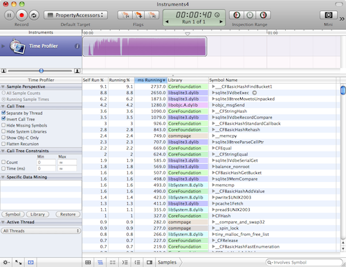
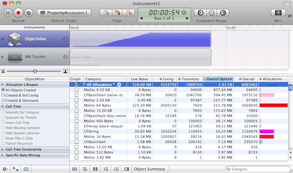

Please note: this article is part of the older "Objective-C era" on Cocoa with Love. I don't keep these articles up-to-date; please be wary of broken code or potentially out-of-date information. Read "A new era for Cocoa with Love" for more.
Finding the cause of performance issues in your programs
This post is a response to reader questions asking how, in my previous post on Replacing Core Data Key Paths, I knew that the biggest performance problem in my initial approach was the incremental reallocation of NSMutableSet. In this post, I'll look at basic time and memory profiling on the Mac and talk about the most common types of scenario to look for when you're trying to solve performance problems.
Introduction
In my previous post, Performance Tests: Replacing Core Data Key Paths, I presented a simple category to improve Core Data key path fetching by 25%-35% (actually the improvement was much greater at small set sizes but they rarely matter). The improvement worked by using property accessors to access the Core Data values instead of looking up the properties by string name.
However, the original "naïve" approach that I used to do this actually took more than twice as long as the original Core Data string key paths.
This week, I'll look at how I analyzed this code and how I worked out where the performance bottleneck was.
The code to analyze
The purpose of the code was to replace this:
NSSet *projectNames = [company valueForKeyPath:@"projects.name"];with this:
NSSet *projectNames = [company.projects slowObjectValuesForProperty:@selector(name)];But, as the "slow" in the method name reveals. The initial approach was slower — by approximately a factor of 2.
The implementation of the slowObjectValuesForProperty: method is really simple. Let's look at it:
- (NSSet *)slowObjectValuesForProperty:(SEL)propertySelector
{
NSMutableSet *result = [NSMutableSet set];
for (id object in self)
{
id value = [object performSelector:propertySelector];
if (value)
{
[result addObject:value];
}
}
return result;
}The test harness that I'll be using will be the PropertyAccessors project from the Performance Tests: Replacing Core Data Key Paths post, with all tests except the "Key Path Accessor" and "slowObjectValuesForProperty: accessor" ifdef'd out.
Time profiler
The first approach you should use when your code isn't running as fast as desired is a basic time profile.
As preparation for this, you should make sure that the test will run for long enough to give useful test results. Time profiling works by suspending the program at regular intervals and reading the program's current position. This amounts to a random sampling over time. But these random samples won't be helpful unless there are enough in your time critical code. Increase your data size or put the code you're looking at in a loop and try to make it run for at least 2 seconds.
For this test, I set the NumCompanies and NumProjectsPerCompany to 100 (giving a total data size of 10,000 project names) and further set the NumTestIterations to 1000 (so this test will fetch 10 million names in total).
This gives the following test durations:
Key Path set iteration test took 4.13078 seconds.
Slow objectValuesForProperty: test took 8.83262 seconds.By default, the Time Profiler will sample once every millisecond. If your tests cover a large amount of code, you'll need more samples — so either make your tests run longer or increase the sample frequency (Time Profiler can go as fast as 20 μs).
Build the project (but don't run it directly from Xcode). Then select the "Run→Run with Performance Tool→Time Profiler" menu. You can also use "Shark" for this but they both work in a similar way and the Time Profiler runs in Instruments which has a nicer, newer interface (although Shark can track a few lower level metrics that Instruments still lacks).
iPhone note: The Time Profiler is not available to iPhone projects. For iPhone projects, select the "CPU Sampler" in the "Run with Performance Tool" menu. The "CPU Sampler" is higher overhead and cannot sample as often or as rigorously but will normally provide similar information.
The PropertyAccessors test will self-run, so you can just watch it go. For other projects where some interactivity may be required, you'll need to interact with the program until it runs the code you want to examine. If your test has a short duration or a large amount of code, you may need to click the "i" next to the "Time Profiler" Instruments icon at the top to change the sample rate to get good coverage for your program (you'll need to rerun the test if you make this change).
Your window should look like this. If it doesn't, make sure the "Detail" view is visible (you won't need the "Extended Detail" view). Also make sure the "Call Tree" view is selected in the "Detail" view (it's the icon at the bottom of the window that looks like three horizontal lines stacked slightly askew).
Once the program finishes, uncheck the "Invert call tree" checkbox in the left column then expand the "Main Thread → start → main" elements and we'll see the most expensive steps in the main() function (which is where all the tests are run in this project).
The top item in the main() function is the fetchObjectSetForRequest: method but we're not looking at that here (it's just Core Data loading and prefaulting the entire database).
Instead, we want to know why the second item, slowObjectValuesForProperty:, takes 2.23 times longer than the third item, valueForKeyPath:.
Expanding the tree from the slowObjectValuesForProperty: method twice, we see CFBasicHashAddValue() occupies almost all of this method's time.
If we expand the valueForKeyPath: call tree 7 times, we can see the same CFBasicHashAddValue() is used to create the set here but for some reason, this function only takes 1402 milliseconds here, compared to 5996 milliseconds for the slowObjectValuesForProperty: method.
The same function, acting on the same data. But one takes 4 times longer than the other. What is the explanation?
There are two possible answers: either the slow case is suffering from poor memory caching performance, or it is acting repeatedly and is slow due to repetition.
Object allocations
Shark can measure event counts (like cache misses and memory bandwidth) if you actually think that's the cause of a problem but it's unlikely to be the problem here. In most situations where the Time Profile isn't clear cut, the best thing to try here is a object allocation analysis.
As with the Time Profile, we run the Object Allocations performance tool from "Run→Run with Performance Tool→Object Allocations" menu in Xcode.
Again, switch to the "Call Tree" view and make sure "Invert Call Tree" and "Separate by Category" are off.
Additionally, right-click (or control click) in the table header of the "Detail" view and make certain that "Count" and "Bytes" columns are both enabled.
If you navigate into "Main Thread → start → main →slowObjectValuesForProperty:", then follow the biggest allocation 4 times and you'll see that __CFBasicHashRehash is responsible for allocating almost all of this method's memory.
Similarly navigating into the valueForKeyPath: of the other test, reveals the same method 7 levels in allocates a majority of this method's memory.
However, there are three big differences between the memory performances of the __CFBasicHashRehash in each case:
- The
slowObjectValuesForProperty:version performs 800,000 allocations whereas thevalueForKeyPath:version performs exactly 100,000 (equal to the number of tests). - The
slowObjectValuesForProperty:version allocates 210.57MB whereas thevalueForKeyPath:version allocates just 97.66MB. - The
slowObjectValuesForProperty:version is found insideCFSetAddValuewhere thevalueForKeyPath:version is found insideCFSetCreate.
From the first point, it would appear that the presumption that the slow version is slow because it unnecessarily repeats itself is looking accurate — it is repeatedly reallocating.
The second point also suggests that the slow method is wasting extra memory (which is probably causing mild performance penalities). On low memory systems, this would be even worse.
The third point suggests why the first two might be the case: the slow method needs to reallocate as it adds more data.
Understand what the code you're invoking does
All this helps to identify where your program is spending its time. From here, you could probably work out that allocating the NSMutableSet once, instead of repeatedly as you go, is a good idea.
Of course, you need to confirm this by applying your changes and testing. Changing this code to allocate once instead of repeatedly as it goes is easy — it takes a matter of seconds. You do need to be wary though about spending too long optimizing code on a whim. The more involved the code change, the more confident you should be that you're actually fixing a problem and not inspecting irrelevant code or making unhelpful changes.
This is where it helps to really understand the code you're playing with.
For example: the reason why moving to a single allocation with the NSMutableSet above is helpful, is not actually directly because of the allocation itself — since the biggest block of time inside slowObjectValuesForProperty: that we're trying to optimize is spent in __CFStringEqual and memcmp when you drill all the way down; it is not spent in malloc itself.
Instead, I know that whenever NSMutableSet resizes, it needs to rehash every single object back into the newly resized hash table. It is this rehashing that is hammering the __CFStringEqual and memcmp functions (since they are the functions used to hash and detect collisions in the hash table). Yes, reducing reallocations makes it faster but the biggest reason for this improvement is the nature of hashed storage: because reducing reallocations reduces the need to rehash.
As I reported in the original post, fixing this allocation so that it happens just once will speed this code up by 2.6 times but it is important to understand that the need to rehash is why this change helped — other reallocation situations may not gain as much as we have here.
Finding the best candidates for speed improvements
Generally though, allocations and reallocations are always a prime place to look. Large allocations are expensive to move around in RAM, millions of small, irregular allocations can fragment memory and every allocation normally needs to be initialized, incurring some kind of expense. Even with NSArray, which doesn't need to rehash when it reallocates, there is still a copy of the elements from the old array to the new one. The performance gain will not be as great but it is still a place to squeeze extra performance.
When optimizing, the first things to look for are:
- Memory allocations. They're easy to find and easy to tweak. They don't always give the best performance improvements but they're a good first point to examine.
- Iteration over large arrays to find elements. If you need to search large arrays often, you should be storing in a dictionary or other constant time access structure. Depending on the size of the array, this can be a near 100% speed improvement. i.e. never, ever search anything bigger than a trivial array.
- Nested loops over medium to large data sets. Easy to find. Eliminate the nesting if you can. Although they can be hard to eliminate since you need to rethink how you access your data but you can often do something to reduce their impact. If you have 1 loop inside another, always put the smallest loop (in terms of number of elements) inside the bigger one if you can, since memory scales better to doing small packets of work huge numbers of times.
- Anything non-polynomial on more than trivial data sets. Non-polynomial actions are the slowest, worst things you can do. They are occasionally required but if at all possible, think up another design. What's non-polynomial? Anything where the number of packets of work involved in processing a collection grows greater than polynomially with respect to the size of the collection (i.e. if the packets of work are "y" and the number of objects in the collection is "x", then non-polynomial means the number of packets of work exceed y=x^a for large values of x, where a is any constant). Exponential growth (i.e. y=a^x) or factorial (i.e. y=x!) are the most common kinds of non-polynomial growth. If all this is confusing, then at least know the common case: trying to find an ordering or arrangement for a set of objects by exhaustively testing every combination is non-polynomial.
You may be tempted to think that pervasive multi-threading, OpenCL, SSE vectorization or assembly optimizations are the best way to solve performance issues, since they are all "high performance" technologies and the fastest programs all use them in some combination. However, these technologies are much harder to implement than simple design improvements so they should always be something you consider once you're sure that the design can't be further improved.
Conclusion
The first rule with optimization is that you should always optimize based on evidence.
Don't begin to optimize if you can't find a bottleneck or create one with data. Optimizing without actual evidence of a bottleneck (just suspicion that there might be one in future) is called "Premature Optimization" and is normally considered a waste of time.
However, even once you know where the bottleneck is, you need to know what is causing it. If the code is small, you can just play with it to see what happens but generally you need to inspect closely. It is surprisingly easy to make the wrong guesses about what is causing performance issues and waste time changing code for no gain.
I hope I've shown you how to gather the information you need to understand simple performance problems and the types of clues you'll need to narrow down the locations in your code that can be improved.
5 key-value coding approaches in Cocoa